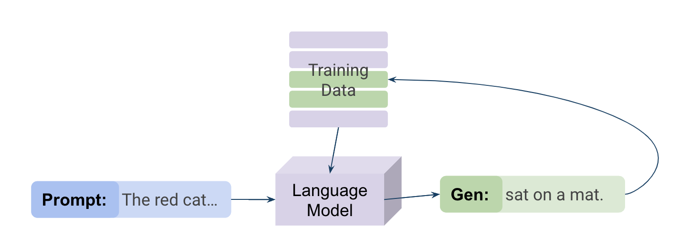
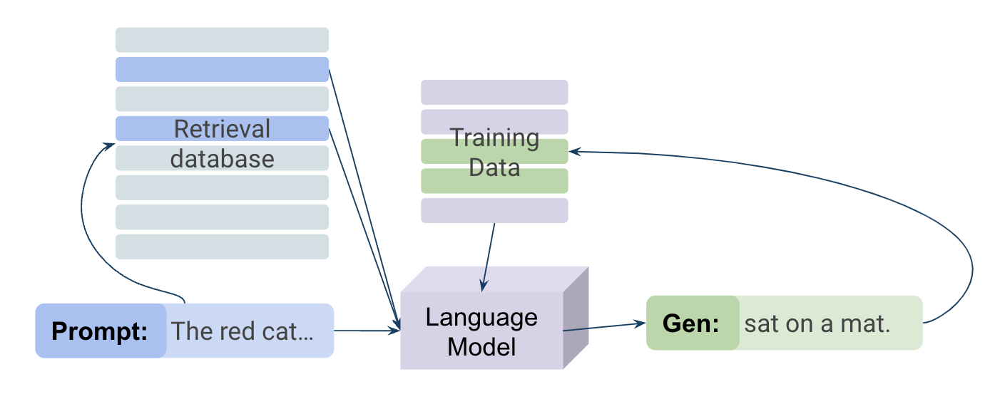
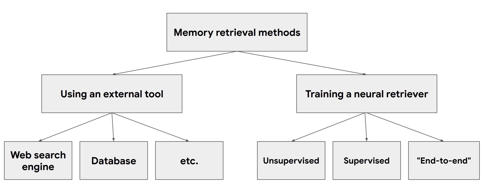

May 2023
Extraordinary recent advances in generative artificial intelligence (AI) models have led to legal and ethical dilemmas in two related areas: privacy and in copyright. Unlike earlier models that use training data to learn to output scores or classifications, generative models produce output of the same form as the training data, such as fluent text or high-resolution images. Current models are so powerful, in fact, that they generate exact or near-exact copies of training instances. This presents serious privacy issues because some training instances include sensitive or private data, and it also raises copyright problems because some training instances include copyrighted works of authorship. Both of these types of issues present immediate risks: Researchers have found cases in which generative outputs included API keys (Mohammed 2021), individuals’ contact information (Carlini et al. 2020), identifiable human faces (Carlini, Hayes, et al. 2023), and close replicas of artists’ unique styles (Butterick 2023).
Although the legal analysis of generative AI is still in its infancy, one common theme is to treat generative models like they are black boxes (Lehr and Ohm 2017; Pasquale 2015; Citron 2008; Rich 2015; Li 2021). While it is possible to train models to produce certain kinds of outputs, and while it is possible to inspect outputs to test whether they have particular properties, it is generally considered to be extraordinarily difficult, if not impossible, to trace why and how a model generated a particular output. That is, generative models, combine a user query or prompt with an uninterpretable numerical representation derived from the training data to create a new output. The generation is not easily traced to any given data point in the training set, and changing the query, the data, or even the random seed used to start the generation process can significantly change the generation.
The black-box view of generative AI has important consequences for its legal treatment. In privacy, it is quite difficult to tell whether an output is an accurate or faithful reflection of training data (in which case it is potentially a privacy violation) or a modified version of training data (in which case it is potentially a different kind of privacy violation). In copyright, black-boxiness goes to the fair-use arguments under which ML researchers have justified the practice of collecting and using large volumes of data. It is precisely because the model itself is uninterpretable that it has been considered not simply to be an infringing copy of the training data (Li 2021; Pasquale 2015). In other words, although generative-AI models can both memorize their training data (Carlini et al. 2020) and hallucinate outputs that have no basis in reality (Lee et al. 2018), it is extremely difficult to tell when a model is doing so, much less prevent it (Carlini, Ippolito, et al. 2023; Ippolito et al. 2022).
But AI models are not inherently black boxes, even though much of the existing legal literature treats them this way. ML researchers are actively attempting to develop techniques for giving better and more granular causal explanations of the generation process (Meng et al. 2022; Geva et al. 2023; Henighan et al. 2023; Dai et al. 2022). In particular, two classes of generative models – retrieval models and attribution models – are explicitly designed not to be black boxes.
In a vanilla generative model, the training data is simply used to train the model so that it effectively captures the relevant features of the data domain. In an image model, for example, that means that the label “cat” corresponds to images of cats. Generative models take in user-inputted prompts, like “Draw an image of a yawning cat” and creates generations by combining features that are learned from the training data. The learned features could be very specific, like that cats have pointy ears, or could encompass entire concepts, like the idea of a domestic cat, or a specific cat. Thus, the training dataset can show up in the model on two time scales: it is both used at training time to create a model, and then because information from the training data is now embedded in the model’s weights, it is used again at generation time to create an output.
Retrieval models add another role for data. In addition to the training dataset, there is also a separate retrieval dataset. The training dataset is used to train the model as before, but the retrieval dataset is used as additional input at generation time. In response to a user prompt, the model identifies – it “retrieves” – instances in the retrieval dataset that are good matches for the prompt. It then takes these results and uses them as inspiration for the generation. To use the example from above, when prompted with “yawning cat,” a retrieval model will first search the retrieval dataset for images of yawning cats, and then use those images to generate its own image of a yawning cat.
An attribution model also extends the vanilla model of generation, but in a different way. An attribution model has been engineered so that in addition to its output generation, it also produces a list of possible attributions for that generation – instances within the training data that had the most “influence” on the output. Influence here is a term of art (discussed in more detail below), but one common approach to defining influence is counterfactual: an input is influential to an output if a model trained without the input would have been unlikely to produce the output.
Retrieval and attribution models may force a reconsideration of the legal treatment of generative AI. By creating a tighter link between input and output, they make it possible for a model creator or user to exercise tighter control over the generation process. In this paper, we explore what kinds of information retrieval and attribution can provide, and how the availability of this information changes the legal analysis. Importantly, we consider both the power and limits of these methods. Retrieval and attribution are not likely to be fully accurate, even as they improve over a black-box baseline. We aim to give lawyers, courts, and policy-makers the tools they need to reason appropriately about what to expect from retrieval and attribution models, and what not to.
A person could explicitly write down a model, and this is how a lot models work: Grant credit if the applicant has at least three open accounts in good standing, and has not declared bankruptcy in the last seven years, unless …and so on. Informally, we can typically think of such models as assigning inputs to outputs.
Machine learning produces models; however, rather than being specified as a manual set of instructions, models are produced algorithmically by inspecting and analyzing available data. For example, in a credit-granting model, an input could be the features of person’s credit history, such as their number of open accounts in good standing, and whether they have declared bankruptcy. The output would be a yes-or-no decision: grant credit, or deny it.
The algorithm for producing a machine learning model (typically called a training or learning algorithm) is given a general specification of the kind of rules that can be used to map inputs to outputs, and then searches for a rule that best fits the available set of training data. The details are exceeding complex, but in general these algorithms run iteratively to learn patterns from data that would result in “good” mapping from input to output, where what counts as a “good” mapping is typically quantified using a performance metric. Machine learning excels when these patterns are too complex to specify manually, or are hard to discover through direct inspection.
One familiar type of machine learning involves assigning labels to inputs, such as tagging images of animals by their species. Another assigns inputs to continuous values, such as the predicted sale price of a house. In the former case, the outputs are drawn from a discrete set of labels: “cat,” “dog,” “yak,” “koala,” and so on. In the latter case, the outputs are drawn from a range of dollar figures. In both cases, the output domains are both different than the inputs (the label “cat” is not the same kind of thing as an image of a cat; nor, of course, is it the same as a cat itself), and much simpler than the inputs (an estimate of “$453,061” contains much less information than the information sheet on a real estate listing page). These models are trained on rich data (images of animals and property details, respectively), but their outputs are comparatively thin. As the algorithm processes these rich data, the data get represented inside the model, and then compressed into comparatively thin outputs.
The outputs of generative models are much richer than that of classification or regression models. Nevertheless, just as the output of a classification model like the image-classifier is a label, and the output of a regression model like the property-valuer is a number, the output of a generative model — a generation — is a piece of media. There are image models (Rombach et al. 2022), text models (T. B. Brown et al. 2020), music models (Agostinelli et al. 2023), spoken-audio models (Oord et al. 2016), 3D scene models (Poole et al. 2022), and many more (Many modern generative AIs combine modalities.).
The form of the model. Neural networks are the architecture for most generative AI models. In comparison to more-familiar sets for classification in statistics, neural networks have many more parameters, which enable richer internal representations of the data.
Model inputs and outputs. The inputs to a generative model are also distinctive. Whereas a classification or regression model’s rule compresses a detailed input into a concise output, a generative model expands a concise input into a detailed output. Most commonly, the input is a user-provided text string (a prompt) used to prime the model. A user would give a generative text model a prompt like, “Last summer, I visited my grandmother in” and the model would generate a completion: “Taiwan.” For image generation models, a user could write the prompt, “Pink cat with a little backpack”, and the model would return an image of a pink cat with a little backpack. Notably, this image generation model is multi-modal, meaning it combines language and image data to create image generations from text.
Training a model. To train a model, an algorithm takes in the training data and some quantified, mathematical objective to perform well on — typically, a metric related to error, which should be minimized. For example, in classification, the objective typically captures how many training examples get classified incorrectly, such as mistakenly labeling a “cat” as a “dog,” which gets penalized during the training process. There is a similar overarching idea that applies to training generative models; however, there is a different way to quantify in the objective whether there is alignment with the training data examples.
Consider text-generation models (typically called large language models or LLMs). During the training process, a model will be rewarded for completing a phrase in a way that correctly matches the training data: The model is encouraged to make outputs that more closely match the training data. For example, a model might be exposed to the training data example “This was a great day,” but shown only the first four words and asked to predict the fifth. If it predicts correctly and outputs “day,” then all of the portions of the model (the “weights”) that contributed to that output will be strengthened. But if it predicts incorrectly and outputs “hecatomb,” then the weights that contributed to that output will be weakened. In this way, the model will converge on common phrases like “great day” and mostly avoid uncommon ones like “Jalalabad teletubby.”
This statistical convergence has important consequences for memorization and hallucination. This model training procedure leads to both memorization and hallucination. Suppose, for example, that the model is prompted with “Last summer, I visited my grandmother in” and the model completes the prompt with “Taiwan”. This completion might arise because there is an exact match in the training data: a sentence reading “Last summer, I visited my grandmother in Taiwan.” This would be an example of memorization. Or, the model might have been trained on enough similar sentences like “I visited grandma in Berlin” and “Taiwan is my grandmother’s favorite city” that it generates “Taiwan” as a plausible completion that is statistically associated with “grandmother” and “visited”. Since generative models are rewarded for reproducing their training data, it is not surprising that memorization could occur.
In some contexts, this conflation of training examples would is harmless; no one reading the output thinks that the LLM has a grandmother who lives in Taiwan. But in other cases, users treat LLMs like reference assistants or search engines and expect that the outputs make assertions of fact about the world. In this latter case, an output like “The capitol of Virginia is Virginia City”2 bears no relation to reality. These generations can be called hallucinations.

Unfortunately, it is not always easy to trace which examples in the training data contributed to a generation. Typical generative models are forgetful; they store correlations that are shared by training examples, but not necessarily the individual data from any particular example. They can be thought of as “stochastic databases,” sometimes returning specific examples from the training set, but more often, piecing together bits and pieces taken from many different examples in the training set. “Taiwan” may have been influenced by “I visited grandma in Berlin” even though the word “Taiwan” appears nowhere in that input example. And correlation does not imply causation: even if “Last summer, I visited my grandmother in Taiwan” appears in the training data, this fact may be completely irrelevant to the generation. The model might have predicted “Taiwan” even if that exact sentence had never appeared in the training data.
While exactly which examples were used to create a generation is unknowable, both retrieval and attribution models aim to create some connections between training data and generations. The increased interest in retrieval and attribution models comes both from the desire to create “better” generations and also to avoid potential legal problems. The two families of models take different approaches:
0cm Retrieval models select relevant training examples before generation. Those selected training examples are given, along with the prompt, as the input to the generative model. This process is shown as the left-most arrow in figure 2.
Attribution models are similar to existing models but use post-hoc methods (methods after the generation is produced) to find connections between generations and specific input examples. This process is shown as the right-most arrow in figure 2.
For example, retrieval models can be thought of as performing a web search, then using the results of the web search to guide producing a generation. Attribution models can be thought of as writing a paper with research that you remember, then looking up citations in past literature that you have read and assigning citations after the fact.

Retrieval and attribution are both techniques for forming connections between the inputs (training data or retrieved data) and the outputs. In particular, they can be used with generative models to estimate which examples in the training data or retrieval data were useful for generating an output. Figure 2 shows retrieval, generation, and attribution as three modules that can make up a generative model: all generative models must include a generation component (shown in purple), but they may also include a retrieval component (blue), or attribution (green), or both retrieval and attribution. The process of generation was described in detail in section 2. Retrieval finds examples in the retrieval dataset relevant to a user-given query. The retrieved examples (shown in dark blue) get appended to the user-given query and is given as input to the generative model. The generative model then outputs a generation (dark green). Attribution models then attempt to attribute generated text to specific examples from the training set.
Retrieval and attribution are processes that can be implemented through multiple different methods. Both components are currently under much development and the specifics are likely to evolve.
Retrieval models can help reduce privacy concerns, improve factuality, and help keep models current. However, the extent to which they improve on these concerns depends on the specific implementation of the retrieval model and also the relationship between the retrieval data and the training data. In this section, we explore different implementations of retrieval models (and their limitations), to set up the discussion of their impacts on copyright and privacy in later sections.
While retrieval models can use the same dataset for training and retrieval, an additional advantage to retrieval models is that they make it possible to utilize multiple data sources while treating them differently. For example, retrieval models offer personalization without training on an individual’s data. This could be accomplished by training the generator component entirely on publicly intended data 3 , and using a database consisting of an individual’s private data as the retrieval dataset. This does not require any model to be trained on the individual’s private data and can be implemented so that an individual’s data never has to leave their device.
Additionally, retrieval models have been used to externalize “memory”, embracing memorization to reduce hallucinations (Shuster et al. 2021). That goal of reducing hallucinations has been referred to as “improving factuality” or “model groundness.” In this scenario, a model might be trained on either private and/or public data and then augmented with a public retrieval dataset. A model creator could independently verify that the information contained in the retrieval dataset was “factual.” Data that is factual is not just okay to be memorized exactly by the model, but in some cases, beneficial. For example, memorizing exactly that Christmas is celebrated on December 25 in the US is not harmful. Verifying factuality, however, remains extremely underspecified. Memorizing that Christmas is celebrated in the winter is only true for the northern hemisphere, and while that is a factual statement in some cases, it is not universally true. We do not dive into what exactly constitutes a fact here, and emphasize that the claim that a retrieval model is more factual goes only so far as we can verify any facts about the retrieval dataset. This is particularly challenging when data is scraped from the web as it may contain inaccurate information and even deliberate misinformation. The majority of popular retrieval models have this goal (Thoppilan et al. 2022).
Retrieval models offer another advantage by enabling the incorporation of more recent data into models. (Luu et al. 2021; Lazaridou et al. 2021) Instead of retraining a model to include more recent data, retrieval datasets can simply be augmented with more recent data. Of course this is not without limits. The retriever module is designed with particular data in mind. If the retrieval dataset becomes very different from the types of data the module was created for, then the performance of the retriever module may decline. To illustrate, a model trained before 2020 would not be aware of the global pandemic that arose and thus may not be able to effectively retrieve data from a dataset collected in 2023. In order to ensure that the retriever module is able to effectively find relevant examples, the retriever module would likely need to be re-trained or otherwise updated.
In addition to multiple ways of constructing the retrieval dataset, the retriever module, the part of the retriever model used for selecting examples can also be implemented in many different methods. Figure 3 shows how different implementations of the retriever module could be categorized. Some modules involve training a “retriever module” such as the methods listed on the right. Other modules can rely on traditional tools like performing a web search via a pre-existing search engine. Many current language models use neural retrievers such as LaMDA (Thoppilan et al. 2022) and RETRO (Borgeaud et al. 2022). 4

Regardless of how the retriever module is implemented, the ability of the retriever module to generalize to new datasets depends on how similar the new dataset is to the dataset that the retriever module was designed with in mind. For example, if a retriever module is optimized to work well for an individual living in California, that same retriever module might not generalize well to an individual living in Germany or an individual in Sri Lanka. Generalization is a known challenge and one that is actively studied. While there is a lot of interest in the problem of temporal shifts (Luu et al. 2021; Lazaridou et al. 2021) and adapting to new domains (Gururangan et al. 2020; Han and Eisenstein 2019; Logeswaran et al. 2019), there is currently not a playbook of best practices.
Unfortunately, because the retrieved examples are added as inputs (and thus “suggestions”) to the generator module, it is possible for those retrieved examples to be underutilized. In the example of a user-query: “Christmas is celebrated…,” retrieved examples like “Christmas is celebrated December 25” only help improve factuality if the generator module utilizes that information. A nuanced point is that the retriever and the generator module may be at odds with each other. If, for instance, there were many examples in the training set that stated “Christmas is celebrated in the summer,” and the date “December 25” never appeared in the training data5 it’s possible that the output of the retrieval + generator could be either “Christmas is celebrated in the summer” or “Christmas is celebrated in the summer on December 25” depending on which module, the retriever or the generator, dominates. The presence of the verified facts in the retrieval dataset does not ensure that the generated output abides by those facts (Longpre et al. 2022). Previous work found that the language model, GPT-3 (T. B. Brown et al. 2020), updated generated answers to include facts found in the retrieved examples 85% of the time (Si et al. 2023).
Attribution models aim to attribute training examples to model outputs through identifying examples with a large influence on the model output, whereas retrieval models aim to incorporate specific examples from the retrieval dataset into the model inputs. These techniques originated with classical statistics and then were developed further for classification models with the goal of better interpreting model outputs and understanding “contributions” from training examples towards predictions (Cook 1977; Koh and Liang 2017).
In the remainder of this paper, we use the words “attribution” and “influence” interchangeably. A common definition of influence is as follows:
A training example was influential to a generation if a model trained without that training example would be unlikely to have produced the generation. 6
In practice, this counterfactual definition is prohibitively expensive to compute because it requires retraining a new model for each training example in question. Modern generative models cost hundreds of thousands of dollars in compute to train 7 and typically only trained once. Instead, researchers attempt to approximate the counterfactual definition of influence by defining additional notions of influence:
If a generation is much more or less likely to be produced after greater importance is placed on a given training example during training, then that training example has high influence on the generation (Akyürek et al. 2022).
A training example can be attributed to a given model output if the model’s internal representation of the training example is very similar to the model’s internal representation of the prompt for the model output (Akyürek et al. 2022).
While the change-based influence definition does not require training an entirely new model, it still requires computationally expensive and memory intensive approximations (Schioppa et al. 2022). On the other hand, embedding based attribution is much cheaper, but has the drawback that a correlation between a training example and a generation does not imply that the presence of that training example caused the generation.
There are two sources of error in attributing training examples to generations. As there is no ground truth definition of “attribution,” researchers create technical definitions of “attribution” and “influence” to use as a proxy metric. The first source of error is in using a technical definition of attribution to approximate our understanding of attribution9. Unfortunately, many of the technical definitions of “attribution” are still too expensive to compute. Thus, the second source of error arises from approximating the technical definitions of “attribution”. These sources of errors can be difficult to tease apart. For instance, let’s use the following generation as an example: “On this day fifty years ago, Sally signed the deed for the farm.” Attributions could look like the following:
The attributed examples make sense for a given generation and is specifically relevant for a given generation. Example attributed training example: “Sally Tinker bought a farm next door to our house fifty years ago.”
The attributed examples seem related but not specific to the generation. Example attributed training example: “Before you buy property, you have to sign a deed.”
The attributed example is a common phrase. Example attributed training example: “Good morning.”
The attributed examples do not make sense for the given generation. Example attributed training example: “Christmas is celebrated on December 25th.”
In cases where the attribution is not specifically relevant for the generation, the attribution could stem from either source of error: a difference in the approximation of the technical definition of attribution, or where the technical implementation of attribution does not approximate well the definition of attribution. In the latter case, a training example could very well have a large influence on a generation, but that kind of influence may not be human interpretable. 10
Unfortunately, distinguishing between errors in the technical approximation of attribution or the divergence of technical definitions of attribution has implications for licensing and copyright. In scenario 4, where the attributed training example, “Christmas is celebrated on December 25th,” has nothing to do with the generation about Sally’s farm, it matters if the attribution was a true positive. In other words, does that attributed training example actually meet the technical definition of attribution or is it a false positive (incorrectly attributed for that generation). If the attribution was a true positive, and the attributed training example was indeed useful for generation, should that training example be licensed and compensated for contributing to the generation about Sally’s farm? Or should only training examples that are substantially similar to the generation be considered for either licensing or copyright.
Errors in approximating the technical definition of attribution could also be false negatives: incorrectly missing an example that contributed to a generation. While identifying false negatives on mass is just as difficult as creating a better method for approximating the technical definition of attribution, it can be possible to find similar examples in the training set of a particular generation. Unfortunately, here, we would also need to define a notion of “similar” that can be used to search through the entire training set. For language, a common definition of “similar” is the edit distance between two sentences. The edit distance between “the dog was red” and “the dog was blue” is one word: there is a one word difference between the first and second phrase. The particular definition chosen for “similar” can be more or less permissive in returning candidate examples (Ippolito et al. 2022).
Two further challenges for understanding sources of error remain. First, techniques for attribution and retrieval are typically measured across many different generations. While this gives an estimate as to how reliable a technique and/or model is, it does not give a tailored measure of confidence for any specific generation. Reasoning about any specific generation will require further study, including investigating the specific example retrieved or attributed and the relationship between those examples and the generation. Second, approximations for influence are easier for smaller models. As generative AI models have become larger and more complex, identifying good approximations remains a challenge (Basu, Pope, and Feizi 2021).
Technical definitions of “influence” and “attribution” are carefully and specifically defined in scientific papers in order to make comparisons between techniques. While they may sometimes correlate with intuitive or legal notions of attribution, they are inexact proxies. These technical terms cannot perfectly capture the term it was based on. This is in part because the legal system leaves room for nuance and context that are difficult to capture systematically, via a computer program. 11 The technical definitions, on the other hand, are designed to be systematically applied and measurable. In other words, technical definitions will always fundamentally differ from intuitive or legal notions because they require a level of specification that we, humans, value but don’t require. Instead, it is important to simply understand where the definitions diverge. 12
Words like “contribution,” “attribution,” and “interpretability” are ill defined before we try to create technical definitions—we don’t always know what we want when we request those words. For example, does an interpretable model mean that a person could describe the process that the model goes through to create a generation? Does it require that the model “reason” about the generation and that the reasons be discernible? At what level of detail would be acceptable? 13
What do we mean when we say we want “attribution?” The presence of a training example that has nothing to do with the user-provided prompt may nevertheless impact the model output, whereas if an artist reads a novel as a child about giraffes and then becomes known for their work painting robots, we might not consider the novel as meaningfully contributing to the artist’s painting of robots. Unfortunately, attribution models could “attribute” a novel about giraffes to a novel about robots for reasons that are not human interpretable.
Both the ability to attribute training data to model generations and the inexactitude of those attributions impact our analysis of privacy and copyright concerns. Attribution and retrieval enable source verification (more in section 4.1). Additionally, memorization and regurgitation are greater concerns when we cannot exactly trace where the training data comes from and cannot respect the intended audience of a data point. In a world where we can better investigate the source and context of a generation, we can hope to make more informed decisions. However, the inexactitude of the attributions makes automatically processing privacy or copyright violations infeasible. Instead, the process continues to require human, and perhaps legal, involvement.
We start our analysis with privacy. Generative models can generate content that is exactly in the training set, and also content that is not quite in the training set. Both can be problematic. In this section, we discuss three ways that retrieval and attribution models alter the balance of privacy risks from generative models.
At the most basic level, attribution models enable source verification by connecting inputs to outputs. Even if the model itself cannot make judgments about whether a generation uses sensitive or personal information in an improper way, highlighting the sources used to create that generation can enable users to form those judgments. It is easier to decide whether “John Example lives on South Main Street” is a privacy violation when one knows whether that generation came from a press release or a paystub.
Reliable source verification can both lessen and heighten privacy concerns. On the one hand, it can help well-intentioned users prevent privacy violations by enabling them to investigate the provenance of generations. If the original source for a generation is a public document, then the information in it is more likely to be freely shareable. But if the original source is a private document not intended to be public, accurate attribution can pinpoint the source of the original privacy breach and enable remediation. Source verification can also help even when the generation is a hallucination – by showing the absence of factual support for the contents of the generation, it shows that no private information is being leaked.
On the other hand, source verification can lead less well-intentioned users straight to a privacy-invading smoking gun, by pinpointing the source data that led to the generation. For a user who is turning to the model precisely in order to invade someone else’s privacy, a generative AI model that is also a powerful search engine offers twice the value at one affordable price.
This discussion assumes, however, that the source verification is accurate. But, as discussed in sections 3.1.2 and 3.2.1, retrieval and attribution models can have both false positives and false negatives. The main effect of false positives is to degrade the utility of source verification by increasing the effort required to check how closely each identified source matches the generation. False negatives are another story. If a model’s users perceive its attributions as reliable, they will treat the absence of evident privacy violations as evidence of absence. This may seem no worse than the current state of the art for generative models, which can emit private data with no attribution whatsoever. The danger is the false sense of security provided by inaccurate anodyne attributions.
Some ways of using retrieval models can offer meaningful privacy gains. As introduced in section 3.1.1, consider, a retrieval model that is trained on public training dataset but then run with a retrieval dataset containing their private information, e.g. a photo-effects app that runs entirely on a user’s device. The generations this model produces will contain only this individual’s private information. Splitting training and retrieval datasets creates an airgap, in which the model itself never has private information embedded within it.14
Other configurations of retrieval models have different privacy implications. A model where the training data and the retrieval dataset are the same has privacy risks that are essentially the same as a standard generative model. Additionally, if a model with a private retrieval dataset is transferred off an individual’s device then that can heightened privacy concerns.
A broader point about generative models is that people can claim a diffusion of responsibilities for harms – both by slicing up a privacy violation into more component steps, and by making one of those steps an uninterpretable black box. When the user who requests a generation is different from the company that compiled the training data, and when the two are separated by a model that is incapable of connecting the generation to the training data, it becomes harder to hold any of the parties accountable for privacy-invading generations.
Again, retrieval and attribution models complicate this picture. On the one hand, attribution restores a link through the black box; precisely because a user or a generation service is in a position to connect generation and training data, it becomes more feasible to impose liability on them. A party who could have known that a generation was privacy-invading is, in an important sense, a party who should have known that it was. On this view, a user might be under a duty to reasonably investigate the attributions the model provided – but would be relieved from liability in cases of false negatives, where the model missed the attribution that would have shown the privacy-violating nature of the generation.
Retrieval models, however, offer yet another way to slice up the deli meat into impossibly thin sheets. If it is hard for a model-maker to contemplate all the prompts the model might be given, and harder still for a foundation model-maker to contemplate all the ways the model might be fine-tuned, it seems utterly infeasible for a retrieval model-maker to contemplate all the different retrieval datasets the model might be applied to. Unless the privacy-violating information is embedded in the model itself – unless it it came from the training data rather than the retrieval data – the model-maker is causally remote from the privacy harms. This puts most of the weight on the user and on the provider of the retrieval dataset.
Generative AI can be thought of as performing a decontextualized, scrambled search through training data. Each generation is a collage of relevant fragments and patterns from the training data. Privacy violations arise because the sources and context in which data originated becomes divorced from the data through the process of collecting training data and training generative models. By the time the model emits information about a person’s address and medical history, that information has been shorn of the context that would warn a reader that the the information was recorded in a context subject to norms and laws against sharing.
Attribution models can help identify the source of information, and some retrieval models can have notions of context baked into their division between training and retrieval datasets. But fundamentally, they cannot restore this context once it has gone missing. If the data collection process does not record who the data is about, who posted it, and what community norms it is subject to, that context is gone for good – or rather, gone for ill. Ultimately, respecting privacy requires understanding and respecting this context, which is a much larger task.
Copyright raises a different set of issues, primarily because the doctrinal structure of copyright law is so sharply focused on causal questions of which copies are based on which other copies. Attribution models make these links more visible; retrieval models can directly link copies.
It is copyright dogma that to infringe copyright, a defendant must copy from the plaintiff’s work. Mere coincidental resemblance is not infringement, and neither is copying from a common source, no matter how closely the two works resemble each other. This is one of the significant obstacles to finding that a generation infringes. Even if it resembles a work in the training dataset, was it copied from that work?
Attribution models, it would seem, provide such proof on a silver platter. When a model identifies a training example as a significant influence on a generation, this is strong evidence that the generation was indeed copied from the training example. Indeed, the definition of counterfactual influence comes close to the legal concept of but-for causation: but for this training example, the generation would not have taken the form that it did. So when an attribution is accurate, it would seem to resolve the question of copying in fact.
Of course, attributions need not be accurate. For one thing, not every attribution will be on the basis of copying copyrightable expression. But that goes to substantial similarity, not proof of copying. Being an influence is not by itself infringement. For another thing, the usual role of proof of copying in a copyright case is to allow the question of infringement to go to the jury: the plaintiff must present enough evidence to allow a reasonable finder of fact to conclude that the defendant copied from their work. And it seems quite plausible to say that if a model’s attributions are sufficiently accurate in general, then an attribution to the plaintiff’s work satisfies the plaintiff’s burden of production, even if there is possibility that the attribution is inaccurate.
Retrieval models decouples the retrieval dataset from the training dataset, a fact that has important copyright implications. Consider, for example, a model trained on public-domain and licensed works that is then run against a retrieval dataset of copyrighted works. Now, although the model is capable of generating works that are similar to copyrighted works, the model itself is no longer even arguably a copy of those works, and hence cannot directly infringe.
This decoupling is a double-edged sword. It can enable uses that seem more respectful of copyright’s limits – for example, a model that locally runs on a user’s phone, with a retrieval dataset of the music on the phone. As in the privacy example above, this approach is copyright airgapped; it does not depend on and does not risk sharing the music on the user’s device with others.
But decoupling can also diffuse responsibility. Much like the makers of video-game emulators who tell users to only use the emulators with properly licensed software, wink wink nudge nudge, model makers could distribute tuned models to users who then, on their own, wire up the models to the kind of large database of infringing content that anyone who is even moderately motivated can easily find online. Here, the model maker could rely on the Sony defense to contributory liability by arguing that the model is a “device” with substantial noninfringing uses. For a model-maker who is careful to avoid inducing infringement by encouraging or counseling users to work with pirated retrieval datasets, this approach may effectively push off copyright liability from their stages of the supply chain.
Retrieval and especially attribution change the calculus of direct and secondary infringement in subtle ways. Retrieval models allow for the removal of copyrighted works (on notice or based on the user’s own investigation) in a targeted way. Whereas a traditional model must be retrained to make a change to the training dataset stick, a retrieval database can be more easily modified to remove the infringing works. Thus, the problem of separating infringing from noninfringing uses is potentially easier for retrieval models – which cuts in favor of imposing a duty to do so.
Attribution, too, might heighten the duties applied to users and model-makers. An attribution that points to an infringing source strengthens the case for secondary liability. It could provide the knowledge of infringement necessary for contributory liability, and indicate the ability to control infringing activity necessary for vicarious infringement. Similarly, to the extent that the DMCA Section 512 safe harbors apply, the information provided by an attribution could be relevant to several of the threshold conditions.
The degree to which courts would and should regard these attributions as creating actionable knowledge, of course, depends on how accurate they are. As above, false positives raise the cost of investigation, but as long as the rate is not unreasonably high, the imposition of a duty to examine the attributions for a generation is still plausible. For false negatives, the question is whether a court would regard a missed attribution as something the defendant’s other processes should have caught, or whether the court might say that a process that is reliable overall is good enough even in cases where an infringement slips through.
This has been a paper on retrieval and attribution models, but it is also not really a paper about retrieval and attribution models. We think that these models may be important developments in the future of generative AI. But this field is developing rapidly and there is high likelihood that next generation models take a different route. Instead, retrieval and attribution models might ultimately be no more than footnotes to the development of generative AI. If so, then the details of our legal analysis might seem to be irrelevant.
But the point of this paper is not to nail down the exact legal treatment of a specific kind of technical architecture – it is to show how deeply the legal treatment depends on the specific technical choices made about that architecture. Key premises of the privacy and copyright analysis of black-box generative AIs are simply not true of retrieval and attribution models. Small changes to a technical architecture can have immense legal consequences.
We therefore have three takeaways for the legal and policy community. First, a one-size-fits-all regulatory regime is likely to fail badly; instead, any regulation of generative AI will need to be able to adapt to different model designs and implementations. Second, scholars should be careful not to assume that the models that made generative AI world-famous are representative of the whole of the field; they are not. And third, as always, scholars and policy-makers must attend to the technical details of the technologies they engage with. It is, after all, our job.